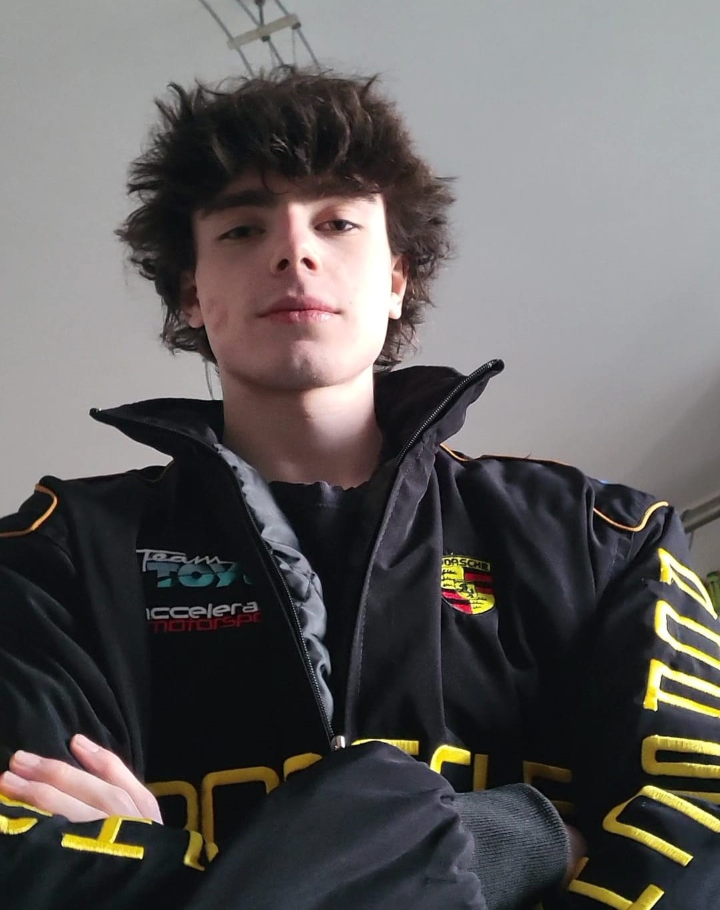

Who am I?Chi sono?
My name is Tomas and I'm a former Italian scientific-high-school student. Born in 2006, I've always had a strong interest in technology and computer science, spending much of my time exploring the digital world. That let me build advanced IT skills and adapt quickly to the fast-moving changes of the web, software and the demands of the market.
Mi chiamo Tomas e sono un ex studente italiano del liceo scientifico. Nato nel 2006, ho sempre dimostrato un forte interesse per la tecnologia e l'informatica, dedicando molto tempo all'esplorazione del mondo digitale. Questo mi ha consentito di sviluppare competenze avanzate nel campo informatico e di adattarmi prontamente ai rapidi cambiamenti del web, dei software e delle richieste del mercato.